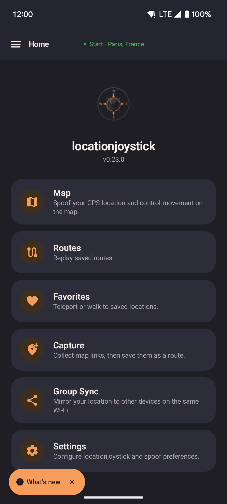

Home screen
The main hub after onboarding. Navigate to any feature from here.

- Tap any card to navigate to Map, Routes, Favorites, Settings, or About.
- Open the navigation drawer (hamburger icon) to jump between screens from anywhere in the app.
- The status bar shows whether mock location is currently active.
Last remembered location
When you reopen the app, locationjoystick restores the last spoofed position automatically. No need to re-enter coordinates after a restart. Toggle this in Settings if you prefer to always start fresh.
Background service
Once spoofing is started, a foreground service keeps it running while you use other apps or the screen is off. A persistent low-priority notification indicates the service is active. Stopping from the notification or from within the app ends spoofing cleanly.